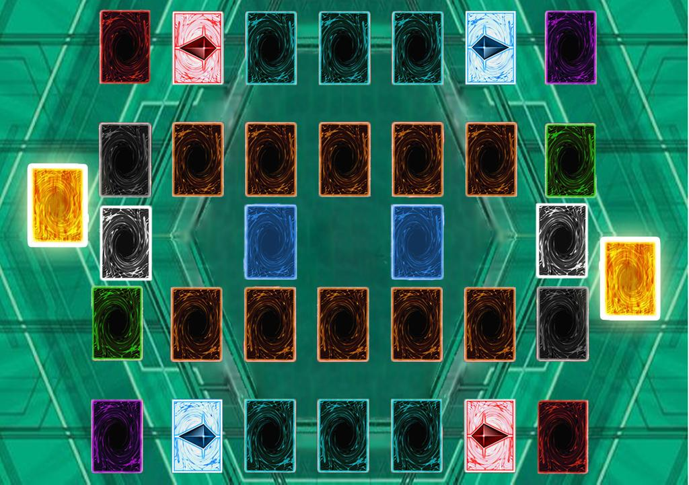

Xtream-Go is a large card trading website. here we provide Xtream-Go cards from old to updated. We alo provide a database of Xtream-Go cards that give users the opportunity to explore the cards they want
Xtream-Go! is an exciting universe based on a card game played with Monsters. Spells, and Traps. The Xtream-Go! franchise includes manga series, television series, several video games, the Xtream-Go! TRADING CARD GAME, and more!
Non Premium
Cyber Dragon Collection
Xtream Go provides two packs, the first pack is the non-premium one. the contents of this pack are 15 monster card effects and 5 regular monster cards then 5 random monster cards which include RITUAL, FUSION, SYNCHRO, XYZ, and PENDULUM
Premium
Advantage of Premium
The second pack of Xtream-Go is the latest card from the Xtream-Go anime series, LINK monster card. This card does not have a defense position like a monster card in general, this card can only be used in the latest Xtream-Go extra zone diseries.
